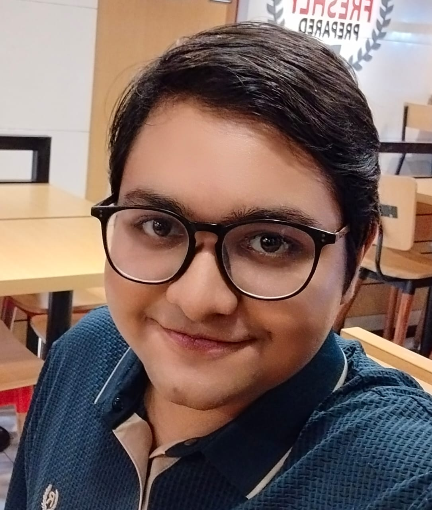

ABDULLAH
AL OMAR
GALIB

About Me
I'm a Theoretical Physics student at BRAC University, Dhaka, passionate about the intersection of quantum mechanics and computation. My journey spans quantum algorithm design, quantum machine learning, and open-source contributions to the global quantum software ecosystem.
From co-founding the Quantum High School Organization, mentoring 500+ students globally, to co-leading MadQFF'25 at Universidad Autónoma de Madrid, I bridge research and education to accelerate quantum literacy worldwide.
Winner of the MIT iQuHack 2026 IonQ Challenge, IBM Qiskit Advocate, and unitaryHACK 2025 bounty winner. I build things that matter in the quantum grid.
B.Sc. Theoretical Physics
BRAC University · Dhaka, Bangladesh
Currently Pursuing
Higher Secondary Certificate (HSC)
St. Joseph Higher Secondary School · Dhaka
GPA 5.00 / 5.00
Quantum Experience
Co-Organizer & Associate
UAM CPrA | MadQFF'25
Madrid, Spain (Hybrid/Remote)
- › Co-led MadQFF'25, a 3-week international quantum festival at Universidad Autónoma de Madrid, attracting global participants.
- › Coordinated 20+ expert speakers from IBM Quantum, Pasqal, Multiverse Computing & ICFO; facilitated 7+ hands-on workshops.
- › Organised a 4-day hackathon with daily challenges testing quantum application development using Qiskit.
- › Contributed as web developer for the official event website.
Co-Founder & Vice President
Quantum High School Organization (QHSO)
Global (Remote)
- › Spread quantum education globally through webinars, workshops, and interactive content.
- › Mentored 500+ students from high school to graduate level with tailored lesson plans.
- › Led two major quantum events: first drew 300+ participants for beginner quantum education; second focused on cutting-edge quantum research.
Research Intern
QWorld
Remote
- › Researched classical and quantum approaches for Quantum State Tomography (QST).
- › Implemented and compared supervised/unsupervised QML approaches on multi-qubit networks and entangled states.
- › Achieved 98% fidelity in quantum state reconstruction, documented in a comprehensive research paper.
Quantum Projects
Bronze Pytket
Introductory quantum computing tutorial using Pytket, created with Quantinuum support. Covers fundamental gate operations, circuits, and algorithm implementation.
QCNN vs Classical CNN
Hybrid quantum-classical CNNs vs classical CNNs on MNIST. Quantum model achieved 90.54% accuracy, outperforming classical by 8.57%.
Quantum Tunneling Sim
Simulates & visualizes quantum tunneling using QuTiP for quantum dynamics and Manim for animated wave function representations.
Quantum Computing for Beginners
Beginner-friendly Jupyter notebook using Qiskit introducing fundamental quantum computing concepts: gates, superposition, and entanglement.
VTOL Vision
Real-time 48-class object detection using YOLOv8. Custom dataset + style-transfer pipeline, optimized for Raspberry Pi 4 edge deployment. Achieved 40.6% mAP@50.
Driving Safety AI
Real-time driving safety via facial landmark detection & traffic sign recognition. Achieves 99% accuracy.
Fruit Detection System
YOLOv8-based recognition of 36 fruit/vegetable classes with 91.68% mAP. Optimized for agricultural monitoring and inventory management.
Nighthawk
AI-powered modular security tool orchestrator for integrated management of cybersecurity components, enabling threat detection and response in dynamic environments.
C_Flex
Creative Python toolkit featuring a terminal Markdown previewer, AI tools, Conway's Game of Life, and media downloaders. Uses Rich & Curses for cross-platform UI.
Research & Publications
Quantum Machine Learning Approaches for Quantum State Tomography
Comparative analysis of supervised and unsupervised QML methods for reconstructing quantum states on multi-qubit networks and complex entangled states. Achieved 98% fidelity using cutting-edge quantum hardware and simulators.
QWorld Research Internship · 2023
LOCC Circuits for Quantum Entanglement Distillation
Designed LOCC (Local Operations and Classical Communication) circuits implementing BBPSSW and DEJMPS entanglement distillation protocols on real IonQ hardware.
MIT iQuHack 2026 · IonQ Challenge Winner
Bernstein-Vazirani Algorithm: Pedagogy & Visualisation
Developed a comprehensive teaching framework for the Bernstein-Vazirani quantum algorithm, including step-by-step circuit derivation, interactive examples, and visualised superposition/interference effects.
QHSO Educational Initiative · 2024
Quantum Tunneling Dynamics: Wave Function Visualisation
Modelled and animated quantum tunneling phenomena by solving Schrödinger's time-dependent equation via QuTiP, rendered as pedagogical Manim animations with configurable barrier parameters.
Independent Research · 2024
Quantum Media Lab
Simulations, lectures, and quantum education visualised.
Quantum Tunneling Simulation
Manim + QuTiP animation of a quantum particle tunneling through a potential barrier, visualising wave function evolution and probability density.
Teaching the Bernstein-Vazirani Algorithm
Step-by-step lecture breaking down the Bernstein-Vazirani quantum algorithm: oracle construction, Hadamard transforms, and measurement.
Open Source Contributions
Building the quantum software ecosystem, one PR at a time.
Mitiq
Authored tutorial on error mitigation pipeline integrating Pauli Twirling, Digital Dynamical Decoupling, Readout Error Mitigation, and Zero-Noise Extrapolation using Cirq.
PauliPropagation.jl
Developed Python usage example notebook for Julia-based Pauli propagation library for quantum error analysis.
Qualtran
Added comprehensive docstrings to fundamental quantum gates (CZPowGate, Rx, Ry) in Google's quantum circuit library.
scqubits
Enhanced documentation with detailed function explanations and updated example notebooks for superconducting qubits simulation.
PennyLane
Implemented a custom __repr__ for the Tracker class, replacing an opaque memory-address output with a readable Tracker(active=..., totals=..., persistent=...) representation for easier debugging. Part of unitaryHACK 2026.
Skills & Stack
⚛ Quantum Computing
🧠 AI & Machine Learning
💻 Software Development
Awards & Honors
IonQ Challenge Winner | MIT iQuHack 2026
MIT & IonQ · 2026
Designed LOCC circuits for quantum entanglement distillation (BBPSSW & DEJMPS protocols) on real IonQ hardware. Awarded $300 Amazon gift card.
IBM Qiskit Advocate
IBM Quantum · August 2025
Recognised as an IBM Qiskit Advocate for significant contributions to the quantum computing community through education, research, and open-source development.
Bounty Winner | unitaryHACK 2025
Unitary Fund · May–June 2025
Claimed $525 in bounties resolving 5 issues across 5 open-source quantum projects: Mitiq, PauliPropagation.jl, Qualtran, QuantumArtHack, scqubits.
2nd Runner-Up | YQuantum Hackathon
Yale University & BlueQubit
Placed 2nd runner-up in Yale's premier quantum computing hackathon, competing in advanced quantum algorithms and applications challenges.
Winner | Asia Pacific Regional Ozone2Climate Art Contest
Mahidol University · UNEP · UNESCO · September 2022
Won regional art competition promoting ozone protection and climate action. Awarded 15,000 Taka.